Munich - Venise : 597 km
+3611 m / -4128 m
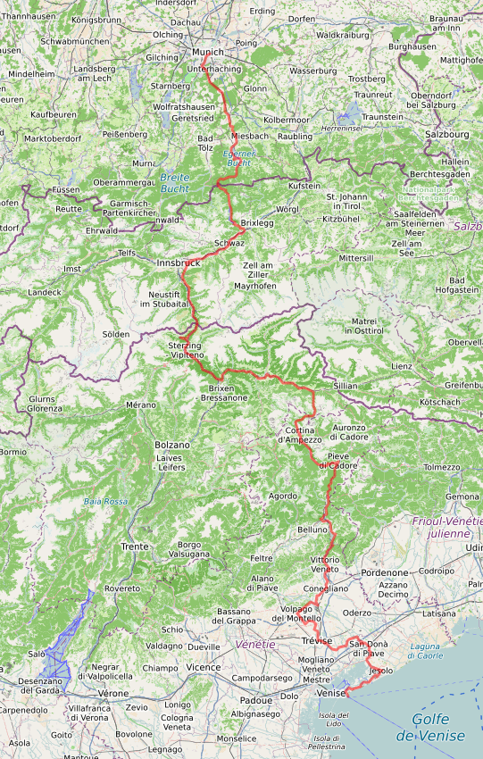
1. mercredi 23 juillet :
Paris - Munich
2. jeudi 24 juillet : ⟶ Kreuth
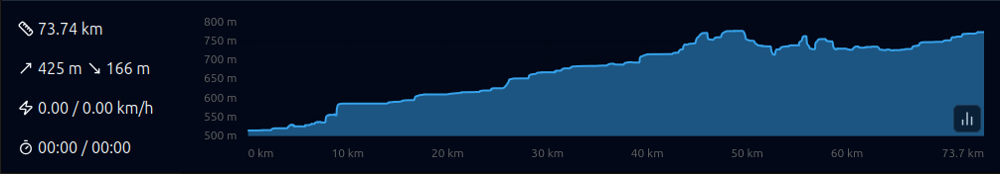
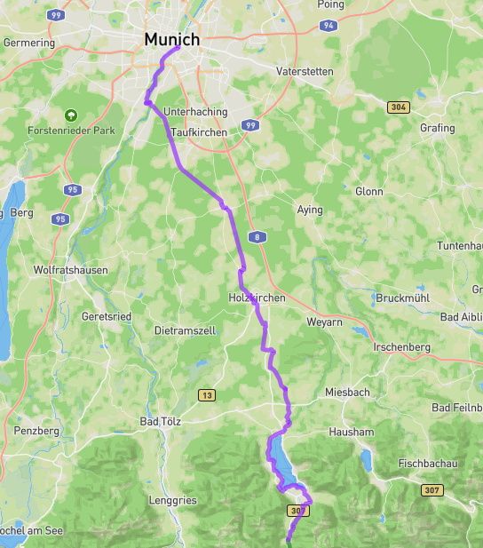
3. vendredi 25 juillet : ⟶
Pertisau
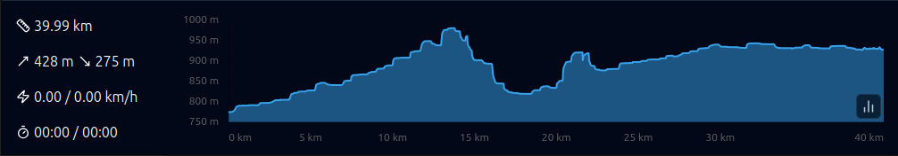
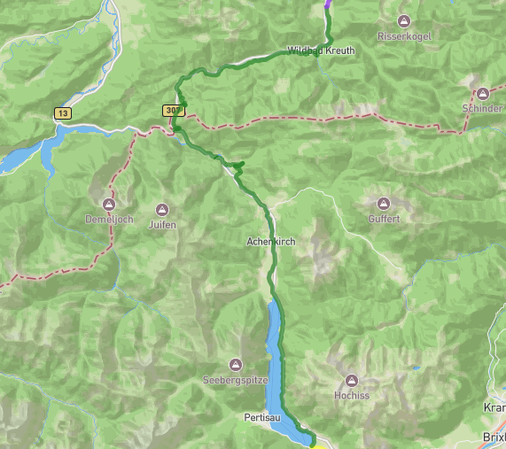
4. samedi 26 juillet : ⟶
Innsbruck
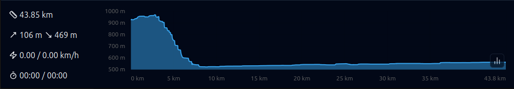
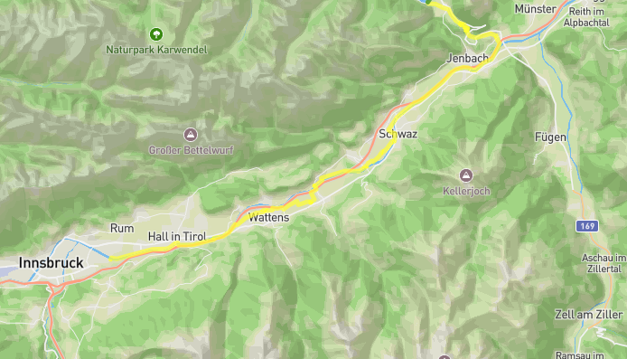
5. dimanche 27
juillet : ⟶ Brenner ⟶ Rio di Pusteria
- 🚆 Innsbruck 09:24 - 10:00 Brenner
- GPX
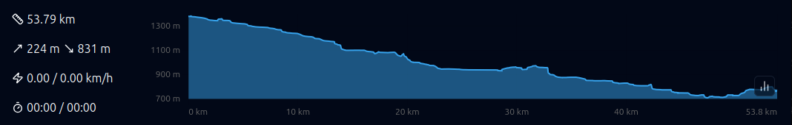
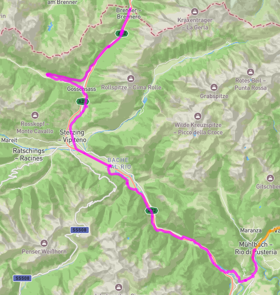
6. lundi 28 juillet : ⟶
Brunico ⟶ Dobbiaco
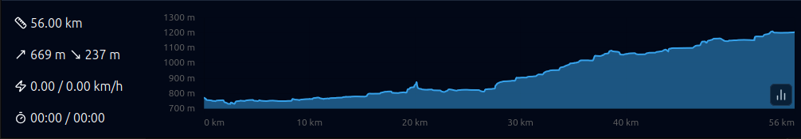
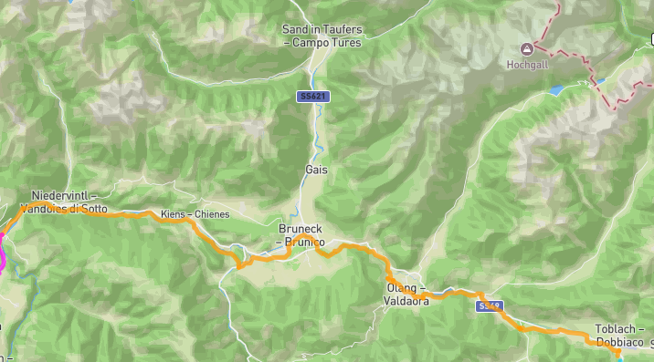
7. mardi 29 juillet : ⟶ Cortina
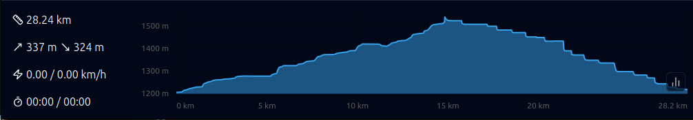
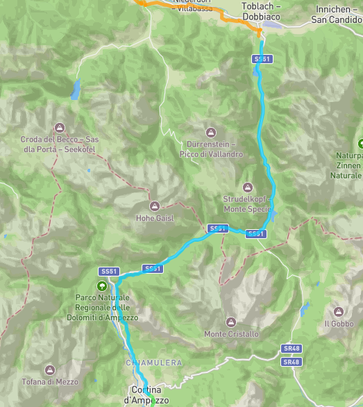
8. mercredi 30 juillet : ⟶
Farra d’Alpago
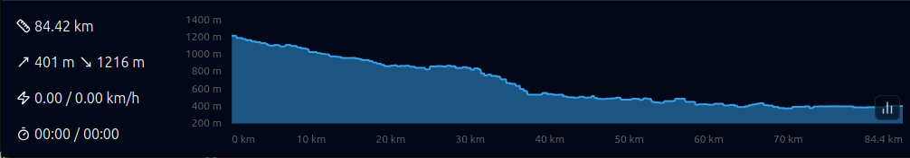
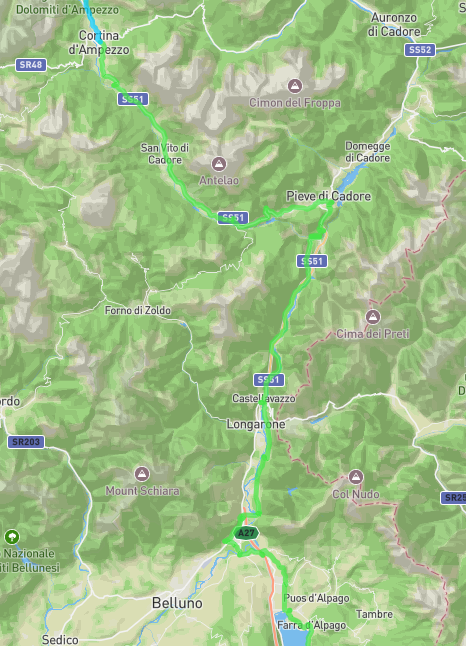
9. jeudi 31 juillet : ⟶ Trevise
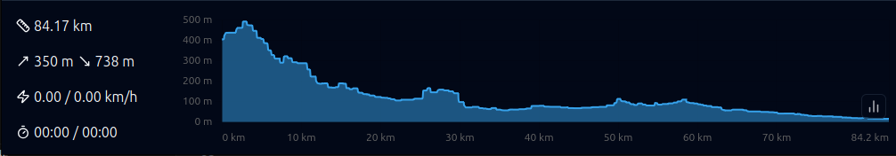
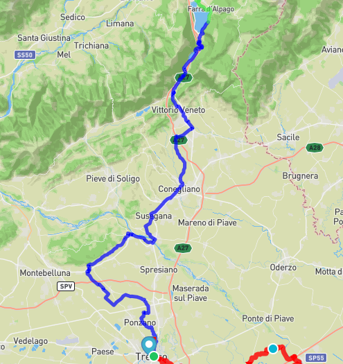
10. vendredi 1 août,
samedi 2 août : ⟶ Venise

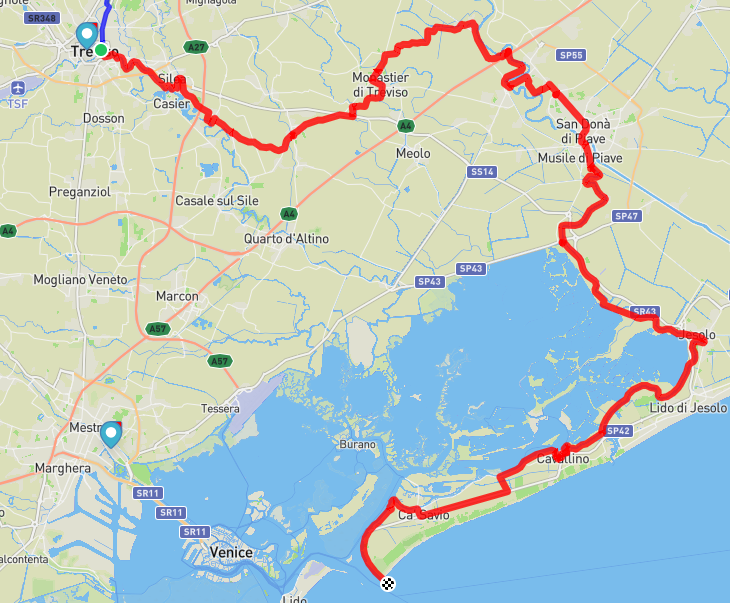
11. dimanche 3 août : ⟶ Paris
- 🚆 Venezia Mestre 13:00 - 15:15 Milano Centrale (58€80)
Visite de Milan à vélo :
https://umap.openstreetmap.fr/fr/map/milan_1219064
- 🚆 Milano Centrale 15:53 - 22:34 Paris (178€00)